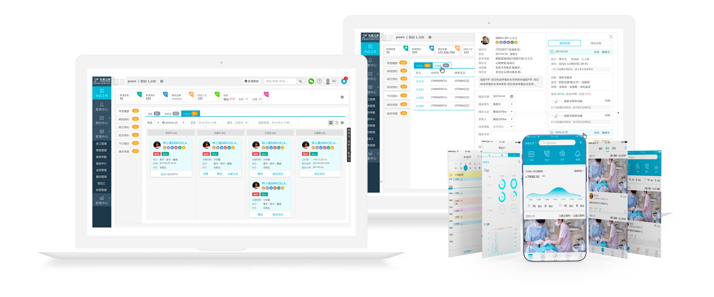
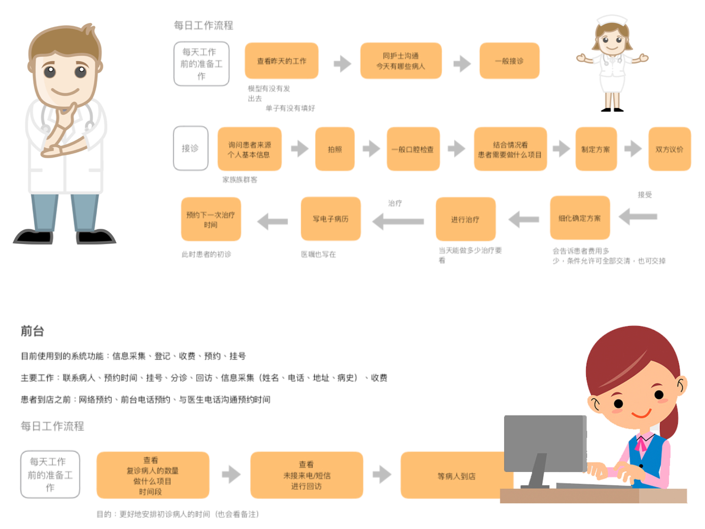
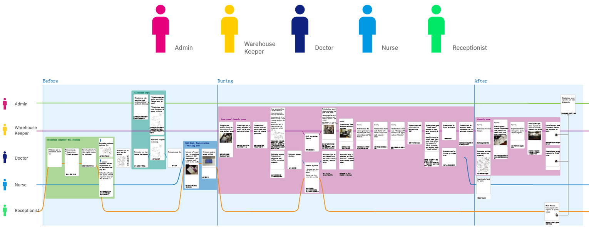
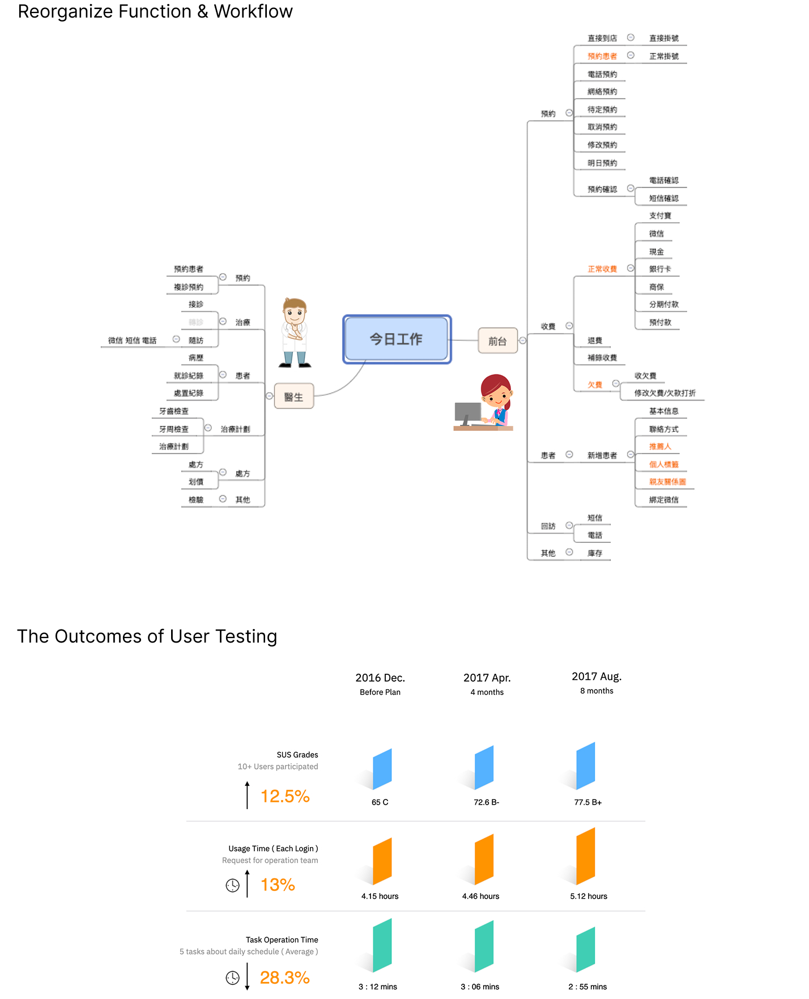

Linkedcare: Dental Clinic Management Ecosystem
Optimizing a complex healthcare SaaS platform through rigorous user research and testing, resulting in a 12.5% increase in task efficiency.
My Role
Senior UX Researcher & Designer, User Interviewer, Mobile Experience Lead
Project Scope
User Interviewing, SUS Evaluation, SaaS Workflow Optimization, Patient App Design

Linkedcare is a leading dental SaaS provider. My mission was to scale its usability alongside its rapid business growth (from 12,000 to over 25,000 clinics), ensuring the complex EMR and scheduling systems remained efficient for clinical staff.
Evidence-Based Transformation
Using the System Usability Scale (SUS), I quantified the impact of design iterations on user satisfaction and operational speed.
| Dimension | Dec 2016 (Baseline) | Aug 2017 (Optimized) |
|---|---|---|
| SUS Score | 65 (Grade C) | 77.5 (Grade B+) - Excellent |
| Task Efficiency | 3:12 mins avg. per task | 2:55 mins avg. (12.5% Improvement) |
| Market Scale | 12,000 active clinics | 25,300 active clinics (59% Growth) |
User Research & Insights

Deep-diving into the "Day in the Life" of dental assistants to uncover appointment bottleneck causes.

Visualizing the end-to-end patient journey to optimize X-ray imaging and EMR synchronization.
Strategic Operational Interventions
My redesign focused on bridging the gap between clinical operations and digital management, transforming the fragmented SaaS tool into a high-performance medical ecosystem.

- Digital EMR Transformation: Eliminated redundant paper-to-digital entry by integrating X-ray sensors and imaging equipment directly into the patient’s digital chart, reducing diagnostic waiting time.
- Intelligent Scheduling Engine: Redesigned the calendar interface from a static view to an interactive "Command Center," allowing nurses to manage multi-doctor shifts and chair turnover with drag-and-drop simplicity.
- Automated Insurance Middleware: Built a streamlined billing interface that auto-populates National Health Insurance claim codes, reducing manual input errors by 30% and accelerating clinic cash flow.
- Patient-Doctor Feedback Loop: Established a seamless mobile-to-PC connection where patient post-treatment data and self-bookings are instantly synchronized with the clinic's CRM for proactive follow-ups.
Full Case Study
Download the detailed PDF version for more technical insights and methodology details.